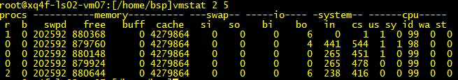
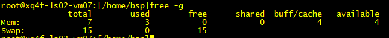
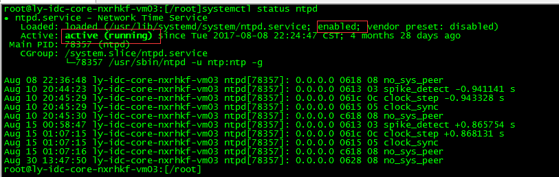
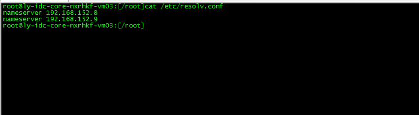

目的¶
Linux 服务器是系统重要的业务运行平台，对服务器进行巡检能够及时发现服务器的隐患，以便于改善和优化服务器的性能。在此，为了便于系统理员顺利的完成服务器巡检工作，特编写此文档以指导Linux服务器的巡检工作。
范围¶
本规范适用于总部、各分公司基于操作系统的日常巡检工作。
术语、定义和缩略语¶
本规范采用以下的术语描述：
-
【强制】必须遵从使用的原则。
-
【规则】如无特殊情况，应该遵守的原则。
-
【推荐】建议遵守的原则。
-
【参考】运维人员参考了解的原则。
软件信息¶
软件名称 版本号
Centos操作系统 7.2
巡检内容¶
1. 文件系统¶
df --h检查是否有利用率超过85%的文件系统；
2. CPU内存¶
Cpu利用率：1%-50%(正常)，51%-90%(正常)，90%-98%(过高)，98%-100%(故障)
{width="5.768055555555556in" height="1.0125in"}
{kind=link}
内存：total 内存总数，used 已经使用的内存数，free 空闲的内存数，Buffer 缓存内存数，cache 缓存内存数，buffe/cache反映的是可以挪用的内存总数，只要不出现swap被使用，说明内存使用正常。
{width="5.768055555555556in" height="0.5680555555555555in"}
{kind=link}
3. 系统日志¶
grep fail /var/log/messages
grep error /var/log/messages
grep warn /var/log/messages
dmesg
用last命令查看用户登录信息。
4. 核心参数¶
- limit.conf
检查/etc/security/limits.conf是否存在以下配置
* soft nofile 65535
* hard nofile 65536
* hard core 0
* soft core 0
- 20-nproc.conf
检查/etc/security/limits.d/20-nproc.conf是否存在以下配置
* soft nproc 65535
* hard nproc 65535
- sysctl.conf
检查/etc/sysctl.conf是否存在以下配置
net.ipv4.conf.all.accept_redirects=0
net.ipv4.tcp_fin_timeout = 30
net.core.netdev_max_backlog = 32768
net.core.somaxconn = 32768
net.ipv4.tcp_tw_reuse = 1
net.ipv4.tcp_tw_recycle = 0
net.ipv4.ip_local_port_range = 40000 60000
net.ipv4.tcp_keepalive_time = 600
net.ipv4.tcp_keepalive_intvl = 15
net.ipv4.tcp_keepalive_probes = 5
net.ipv6.conf.all.disable_ipv6 = 1
注：以上参数为推荐标准设置，如果有不符合的，要具体分析主机业务，根据实际情况分析是设置错误，还是业务需求。
5. 安全基线¶
- 系统账户安全检查
查看文件权限
ls --l /etc/passwd
-rw-r--r-- 1 root root 1743 Aug 4 18:43 /etc/passwd
ls --l /etc/shadow
-r-------- 1 root root 1107 Nov 3 19:09 /etc/shadow
检查无关用户是否已被锁定
cat /etc/passwd
cat /etc/shadow
注：检测系统自带的与设备运行、维护等工作无关的账号是否被删除或锁定。
- 检查root是否可以直接登录
cat /etc/ssh/sshd_config|grep PermitRootLogin
注：如果输出结果为PermitRootLogin no，代表以关闭root直接ssh登录
- 测试telnet是否关闭
systemctl status telnet.socket
systemctl status xinetd.service
- 检查是否设置帐户定时自动登出
cat /etc/profile
注：输出结果，查看以下内容
TMOUT=180 # 需小于300秒
export TMOUT
- 检测umask设置
cat /etc/profile|grep umask # 查看是否有umask 027内容
6. NTP和DNS解析¶
- 查看NTP服务运行状态，使用systemctl status ntpd命令查看，具体如下：
{width="5.768055555555556in" height="1.8305555555555555in"}
{kind=link}
注：图中的输出enabled代表服务已设置开机自启，active(running)代表服务当前运行正常，NTP服务必须设置开机自启，并且运行正常。
- 查看NTP连接状态，使用ntpq -p命令查看，具体如下：
root@ly-idc-core-nxrhkf-vm03:[/root]ntpq -p
remote refid st t when poll reach delay offset jitter
==============================================================================
+192.168.136.43 79.98.105.18 3 u 60 1024 377 1.088 3.937 4.695
*192.168.136.44 60.190.217.142 3 u 1038 1024 377 1.153 2.791 6.049
注：命令输出中，192.168.136.43和192.168.136.44代表配置的ntp服务器的IP，如果IP的前面有"+"和"*"表明本服务器已和ntp服务器建立连接，可以正常同步时间。
- 查看DNS配置，需查看/etc/resolv.conf文件的设置，具体如下：
{width="5.768055555555556in" height="1.586111111111111in"}
{kind=link}
注：此文件有如上输出，代表已设置DNS。
7. 核心服务状态¶
- 查看sshd服务是否运行正常
systemctl status sshd
- 查看vsftp服务是否运行正常
systemctl status vsftpd
- 查看防火墙是否关闭
systemctl status firewalld.service
- 查看selinux是否关闭
getenforce
巡检周期¶
巡检需要每月进行一次
巡检报告¶
巡检后根据结果输出巡检报告,符合的项表示正常，不符合项标示出来，在本巡检周期内整改完毕，不得拖延至下一巡检周期。